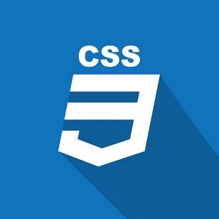
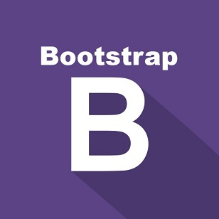
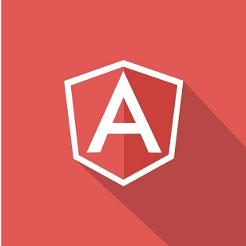

Ming Web Design Studio
Health,Happy,Hardworking
MH Web Design Studio
I'm a self taught web designer, developer, co-founder and entrepreneur based in Finland.I'm currently part of a small web development team in an upcoming start-up, building web and mobile applications.My passion is to use technology based solutions, to help solve real world challenges.
Competences:
Languages and Frameworks:
Javascript, HTML5, CSS3, jQuery, Bootstrap3, Angular.js, Meteor.js.
Tools and expertise:
Git, Responsive Web Design, Agile Methodologies.



